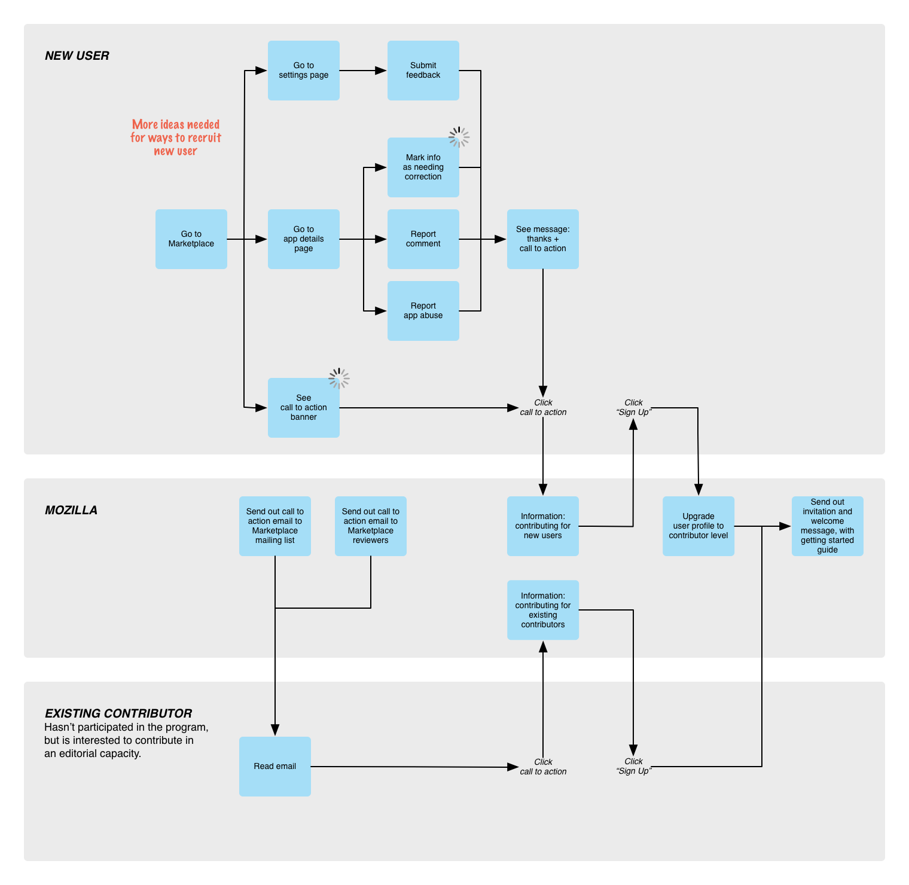

---
layout: MarketplaceUXSpec
multipage: false
---	

<div class="container">
	<h1>Customer Journey Map</h1>

	<!-- Pagination. If you have more than one page, set the multipage variable in the Frontmatter to true. Editing the pagination code happens in /_includes/homePagination.html. -->
	{% if page.multipage %}
		{% include homePagination.html %}
	{% endif %}

	<div class="col-sm-12 col-md-12 col-lg-12">
	
	  <h3>What is it?</h3>
	  
	  <p class="longText">The customer journey map is a tool that we use to communicate the journey of our <a href="audience.html">users</a> and their points of interaction with the Firefox Marketplace service. The entire service is combined under a catchall term called ‘Mozilla’ for the sake of simplicity, but can be broken down into e.g. Editorial Team, Community Team, system, and so on.</p>
	  
	  <p class="longText">The map doesn’t aim to represent the deepest details. There’s no screen prototype or detailed feature requirement. Instead, it conveys actions, processes, and information flow between multiple actors in a servvice. For instance: somebody goes here, then the info is handed off to this system, then the system does this, then after this it’s handed off to some other person, etc.</p>
	  
	  <p class="longText">The journey is structured into four phases:</p>
	  
	  <ol class="longText">
	    <li>Interest, recruitment and entry</li>
	    <li>First contribution</li>
	    <li>Showcase, share and promote</li>
	    <li>Support and future contributions</li>
	  </ol>
	  
	  <h3>Needs and Answers (a.k.a. Behaviours, Triggers, etc.)</h3>
	  
	  <p class="longText">Before we look at the map, it’s helpful to look at what each <a href="audience.html">user type</a> <strong>needs</strong> in each phase, <strong>activities</strong> they do to seek fulfilment, and what <strong>answers</strong> will Marketplace service need to have for those needs.</p>
	  
	  <p class="longText">Put simply, this is a table of what everybody wants, and how everybody go about getting what they want.</p>
	  
	  
	  
	  <h3>Customer Journey Map</h3>
	  
	  <h4>Phase: Interest, recruitment and entry</h4>
	  
	  <p class="longText">Ways to recruit:</p>
	  
	  <ol class="longText">
	    <li>Banners with call-to-action</li>
	    <li>Recruitment emails sent to existing contributors</li>
	    <li>Get Involved page</li>
	  </ol>
	  
	  <p class="longText">Ways to get started:</p>
	  
	  <ol class="longText">
	    <li>Documentation: how to write good feedback for developers, how to write good review, how to translate an app landing page, etc.</li>
	    <li>Interactive guides: when first logging in as a contributor, Marketplace should help guide contributors through the user interface</li>
	  </ol>
	  
	  
	  
	  <p class="longText">After Mozilla upgrades the user’s account into a contributor’s, we move to the next phase.</p>
	  
	  <h4>Phase: First contribution</h4>
	  
	  <p class="longText">Types of contribution:</p>
	  
	  <table class="longText">
      <thead>
        <tr>
          <th>Editorial Support</th>
          <th>Developer Support</th>
          <th>User Support</th>
        </tr>
      </thead>
      <tbody>
        <tr>
          <td><strong>Help localise editorial content</strong> that Mozilla came up with. For example: we’re launching 10 new collections in Brazil and 10 other collections in India. We have the English text already.</td>
          <td><strong>Supplement</strong> app listing page with functional, good-looking additional <strong>screenshots</strong> and videos – taken from a Firefox OS device</td>
          <td><strong>Abuse patrol</strong>. Look through Marketplace for reviews, apps, other content that is inappropriate.</td>
        </tr>
        <tr>
          <td><strong>Review new apps</strong> - Give list of new apps in the Marketplace and encourage contributors to review them. X number of reviews could earn them recognition. Contributors could specialize in certain categories (games) and locales (Brazil). Recommendations passed on to Scott.</td>
          <td><strong>Localise app listing page</strong>. A lot of app landing page is only available in English. A lot of developers don’t, or can’t, localise. A contributor should be able to do this. The app might not be localised, but at least its description is.</td>
          <td></td>
        </tr>
        <tr>
          <td><strong>Find apps for x</strong>. Have contributors find apps for a particular thing on the editorial calendar. For example, finding Christmas-related apps</td>
          <td><strong>Help make screenshots interactive</strong>. Let’s say that the app listing page has a screenshot of the app’s home screen. What are the parts, and what do they do?</td>
          <td></td>
        </tr>
        <tr>
          <td><strong>Missing apps</strong>. Identifying gaps in content in locales and raising issue to editorial team. For example, identifying lack of newspapers in Macedonia.</td>
          <td><strong>Mark information in the app listing page as needing correction</strong>. Somebody else is notified and invited to correct it.</td>
          <td></td>
        </tr>
        <tr>
          <td><strong>New and notable</strong>. Every so often, a great app comes along but is overlooked by the editors. A community member can be constantly on the lookout for these hidden gems: trying, testing, and recommending them for the editors.</td>
          <td><strong>Edit app listing page</strong>. Let’s say that you’ve found a typo or incorrect information in the app landing page. As a contributor, you have the power to correct this information. Corrections are sent to developers for approval. Contributors get credit.</td>
          <td></td>
        </tr>
        <tr>
          <td></td>
          <td><strong>Localise apps</strong>. This isn’t related to the app listing page. This is about localising the apps themselves, and helping developers to get their app strings translated into other languages using tools like Transifex.</td>
          <td></td>
        </tr>
        <tr>
          <td></td>
          <td><strong>App promoters</strong>. Hook developers up with contributors who are passionate about their app. Have contributor work with developer to promote app via Facebook, Twitter, etc.</td>
          <td></td>
        </tr>
      </tbody>
    </table>
		
	</div>
	
		
